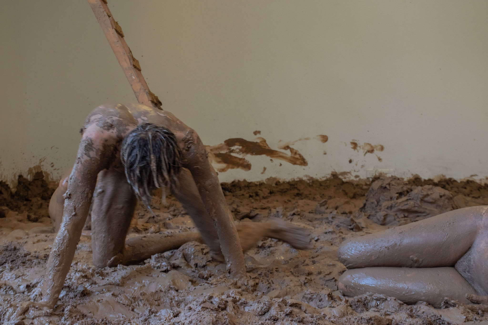

baksteen fabriek

detalles acá
Moverse sin un propósito ni un destino claros; convertirnos en el espacio donde habitamos; y observar lo que le sucede al cuerpo humano cuando se le despoja de su función.
En BAKSTEEN FABRIEK los performers explorando
las limitaciones de su cuerpo a través de la materialidad de la arcilla. No ejectuaron una coreografía, ni
''actuaron''' convertirse en arcilla, sino que se adentraron en un estado que responde a la pregunta:
COMO MOVERSE SIN FUNCIÓN ALGUNA?
Exploran el movimiento del cuerpo cuando se despoja de su función
mundana; como la arcilla los hace mover-se.
El proyecto fue una intervención del cuarto: El piso se cubrió con trece (13) toneladas de
arcilla procedente de Alemania, se creo un pozo, se quitaron los paneles de durlock del techo para exponer
los zócalos originales del edificio, y se agregó un sistéma de agua que caía del techo
al pozo mencionado previamente.
CREDITOS
PERFORMERS: Adrianna Wojtylowicz, Bo Oskamp, Catarina ???, Jacobus Benning, Jens Klitte Mogensen, Martina Parma Muñoz, Mayuka Kowaguchi y Zacharias Theodosakis.
Este proyecto fue posible gracias a Delgromij, Oscar van der Kruis y el equipo de instalaciones del KABK.
FOTOGRAFÍAS
Andrea Nino Lombardi
Eric de Vries
Michael Toner
.JPG)


La audiencia también podía entrar al espacio.